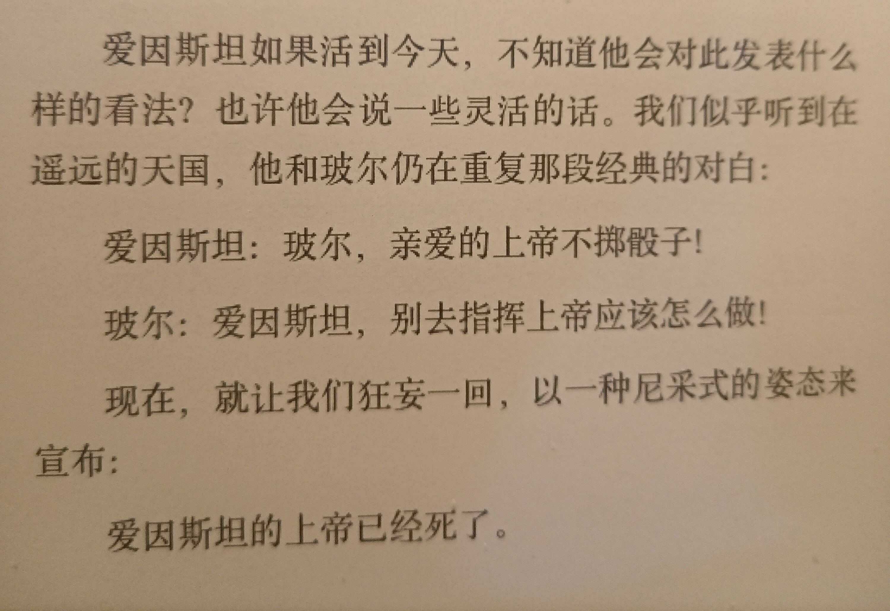

读《上帝掷骰子吗》
遗憾的是，到现在为止我们还无法肯定对于薛定谔的猫到底发生了什么
花了几天摸鱼时间读完了这本书，以下整理整理所思所想，也许以后能讲给我的娃（bushi
爱因斯坦的上帝？
在经典力学中，我们的世界是确定的，一切都遵循着经典、简洁的物理定理。我去掷骰子，我不知道结果的原因只是因为得到的信息不够多，只要知道足够的信息，比如掷骰子的高度、角度、桌面的弹性等，就能算出来结果。在那个经典的时代，我们对此深信不疑。拉普拉斯兽上下四方、往古来今无所不知。
后来出现了一个怪物，它嘲笑拉普拉斯兽：你连宇宙中现有粒子的状况都不能完全了解，还说什么过去和未来？
这就是量子力学。
对于光是粒子还是波，人们争论了几个世纪，直到现在，对于这个问题的解释仍然五花八门。你可能会说：光处于粒子和波的叠加态，既是粒子又是波。但是什么是“既是粒子又是波‘呢？你不去观测的时候它到底是什么呢？到底什么是叠加态呢？
下面就以薛定谔的猫猫为例，简单介绍几种人们对于量子论的解释
哥本哈根解释认为薛定谔的猫在你不去观测的时候处于”既死又活“的叠加态，当你去观测的时候，波函数坍缩，得到一个确定的结果。这引来了一大堆问题：
什么是观测？什么是意识？
观察者是不是需要意识？如果是用“摄像机”记录呢？
所以说关键是这个量子态的物体有没有给周围环境留下痕迹？
薛定谔的猫没有意识？如果换成大猩猩呢？如果让你的朋友带上防毒面具和猫关在一起呢？
有意识和无意识的界限在哪里？
这太离谱了！
（其实在这里我想起了《三体前传——球状闪电》中的一个片段： 懒得写了，略（doge
隐变量解释
这个解释是说实际上存在着一种我们无法观测到的“隐变量”，即隐藏起来的变量，这种变量决定了猫猫是死是活，或者电子通过面前的哪条缝，太好了，我们的世界还是确定的。
然而不幸的是，这种理论要求有一种信号传递可以超过光速。实验已经证明，我们的宇宙不可能同时具有实在性和定域性。
你会选择放弃谁呢？
多世界解释
很流行的一种解释。是说每当电子在双缝前做出“选择”的时候，我们的宇宙就会分裂为两个，在其中一个里面，电子通过左缝，在另一个里面，电子通过右缝。
但是为了一个电子动辄让整个宇宙分裂这……未免有点……大材小用？
不过这个理论避开了“观测者”这个特殊的身份，让我们的上帝不必看智慧生物的眼色行事。
（（安利一下 《Rick & Mordy》第二季第一集
系综解释
这个解释看得我有点生气啊
如果世界真的像这样的话那就太恐怖了，我们穷尽智慧永远也无法找到单个电子的运动规律，因为根本没！有！规！律！我们也无法知道某个电子精确的信息，只有统计学意义上的信息。这简直是对理论物理学的极大侮辱！
这是一种完美的鸵鸟策略，但是他无法满足物理学家的好奇心。
......
——以上这些解释都不是凭空想象的，而都是有其数学理论并且经过检验的，我就看着图一乐，无心去深究了
总之，我们的世界不可能同时具有实在性和定域性，这太诡异了！你能想象两个相距几公里的粒子（或者说他们是同一个粒子）之间互通有无，默契无间吗？或者你能想象在你不去看月亮的时候月亮的粒子去宇宙尽头旅行而当你观测它的时候有乖乖地“回到原位”吗？

灵感到底来源于哪里
第一次读到普朗克在黑体辐射上运用插值法结合两个公式得到普朗克公式的时候，我就想到了这个视频
3blue1brown---Alice, Bob, 立方体的平均阴影面积
人们更多看到的、推崇的，是一些巧妙的手段和解法，很少有人喜欢爆算。难怪我在跳过这些上下求索的过程直接看最巧妙的部分的时候，经常会迷惑不解，似乎是从天上掉下来了一个答案。并不是所有过程都像中学时代做题一样，出题人引领着你一步一步走下去，我倒有些怀念在小镇里做题的日子了。
运用一些数学手段“凑”出正确的公式，看起来很幸运，可是实际上是普朗克努力了六年没有结果，最后无可奈何才想到这种办法，惊奇地发现和实验如此相符。普朗克公式被写出来的那一刻，量子世界在迷雾中对人类说了声"Hello world!"
但是灵感到底从何而来呢？
如果以高中生写作文的姿态，可以说灵感出自于努力，你看那些大佬，都是很努力然后突然就有了灵感，但是这样的答案谁会满意呢？
对于这个问题，我当然没找到答案。只能在此感叹一下QAQ
（留白）
我无法想象爱因斯坦去世时该有多么遗憾，花了30年都没有建立统一场论，眼看着世界疯了、上帝疯了，而自己想建立的统一大业却没有太大突破，唉！天才尚且如此，何况普通人呢？
为什么科普
我对科普读物的态度经历过以下变化：
- 觉得科普读物很酷
- 觉得科普书写的都大同小异，还是学数学比较酷
- 无所谓酷不酷，自己读着开心就行
- 把晦涩难懂的知识转化为通俗易懂的文字，这真是一门艺术！
我的第一本科普书是高中时读的汪洁的《时间的形状》，之后又买过很多的科普书，但是由于“学业繁忙“基本没怎么认真看，认真看完的，并且看的很懂的也就这一本吧。《时间的形状》这本书写的很好，很形象、很奇妙，让年少无知的我深深地迷恋上了物理，奈何发现自己数学知识根本不够，于是......爱上了数学就抛弃了物理啊，善变无情的女人！
对于我来说，指引我崇尚科学、爱上数学的无非就是那么几本科普书（当然还有许多良师益友），我现在才发现，这就是科普的意义！
一本好的科普书，能把读者从繁杂的公式、定理中解放出来，从远处领悟精神。有句诗叫“不识庐山真面目，只缘身在此山中”，大概是这个道理。形象点说，科普就是一些科学家，把科学说的很神奇很牛逼很好玩，把看起来有前途的年轻人骗过去，为科学研究“绵延子嗣”（bushi)。那科普作家不都是骗子吗？答案是：愿者上钩。
其实不只是上面说的这样（如果只有上面这个目的的话，像我这样的老年人读科普难道就没有意义了吗？）。人生有涯而知无涯，我不是经常感叹自己想学的太多学不完么？也许像这样大略了解了解就是我的归宿吧。
向大师学习。经常在读一本书或者听大佬演讲的时候都会被安利很多书，导致我的书单越看越长。让我知道自己的无知，这也是一种收获。
啊这些人！真是博学！我也想成为一个博学的人！
以上是我理解的科普的意义。
这本书
这本书很好。尤其是后半部分，关于量子力学的可能解释。真可谓“入之愈深，其进愈难，而其见愈奇”，任何对量子力学感兴趣的朋友都不能错过这本书（即便你认为自己学过量子力学）。
不剧透了。
这几天简直在摸大鱼，鱼都给我摸秃了，总算把这本书看完了。可恶，我看书真慢！TAT